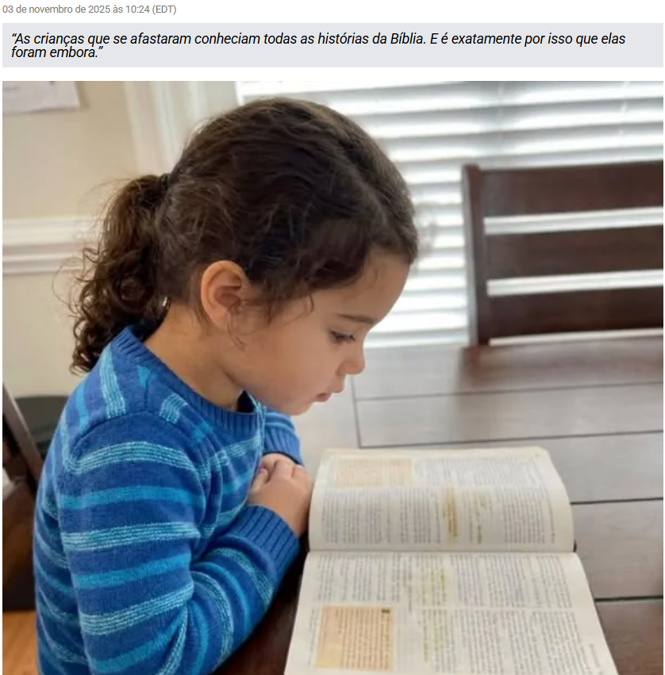

Pastor de Jovens Revela a Verdade Chocante:
Por Que 73% dos Filhos da Igreja Abandonam a Fé (E Como Impedir Isso)

Eles deveriam ter sido nossos crentes mais fortes. Mas foram embora.
Se você tem filhos em idade escolar indo à igreja todos os domingos...
Se você acredita que conhecer histórias bíblicas significa ter uma fé forte...
Se você tem visto adolescentes se afastando da igreja e se pergunta por quê...
Se você acha que mais atividades e programas melhores vão mantê-los engajados...
Então o que estou prestes a revelar pode salvar seu filho de se tornar apenas mais uma estatística.
73% das crianças criadas em lares cristãos abandonam a fé até os 18 anos.
Mas isso não tem a ver com rebeldia, professores universitários ou pressão dos colegas.
Isso tem a ver com uma falha fundamental na forma como ensinamos fé às crianças. Uma falha que começa a destruir a crença delas quando ainda têm apenas 8 anos.
O Pastor de Jovens Que Não Conseguiu Salvar Seus Próprios Alunos
Meu nome é Pastor Michael Chen. Há 22 anos lidero ministérios de jovens no Texas.
Ensinei mais de 3.000 crianças. Escrevi currículos. Liderei conferências. Pais confiaram em mim o desenvolvimento espiritual de seus filhos.
Mas em maio de 2023, vi minha própria “história de sucesso” desmoronar.
Sarah Mitchell era perfeita. Educada em casa. Sabia 200 versículos bíblicos de cor. Liderava o louvor. Participava de todas as viagens missionárias.
Duas semanas após se formar no ensino médio, ela postou no Instagram: “Finalmente livre para admitir que não acredito em nada disso há anos.”
Os pais dela ficaram devastados. “Nós fizemos tudo certo”, a mãe dela chorou no meu escritório.
Foi aí que percebi a verdade horrível: nós tínhamos feito tudo exatamente errado.
A Pesquisa Que Expôs Nosso Fracasso
Passei seis meses analisando cada criança que havia deixado nosso ministério jovem ao longo de cinco anos.
87 crianças no total. 64 haviam abandonado a fé.
Mas aqui está o que me chocou: as crianças que saíram conheciam MAIS histórias bíblicas do que as que ficaram.
Tinham participado de MAIS programas.
Tinham memorizado MAIS versículos.
Aprofundei-me em pesquisas sobre desenvolvimento infantil. O que encontrei mudou tudo o que eu acreditava sobre ensinar fé.
A Janela dos 8 aos 14 Anos Que Ninguém Comenta
Entre os 8 e 14 anos, o cérebro das crianças passa pelo que os neurocientistas chamam de “mudança cognitiva”.
Elas param de aceitar informações só porque adultos dizem. Começam a perguntar “por quê?” e “como você sabe?”.
A Dra. Patricia Goldman, de Stanford, descobriu que é nesse período que as crianças desenvolvem sua “estrutura epistemológica” — o sistema básico para determinar o que é verdade.
Se as crianças não desenvolvem razões para a fé nessa fase, encontrarão razões contra ela mais tarde.
Mas aqui está o escândalo: 99% dos ministérios infantis focam no O QUE acreditar, não no POR QUE acreditar.
Por Que Tudo o Que Estamos Fazendo Dá Errado
EBF? Atividades divertidas, zero teologia. As crianças lembram dos jogos, não de Deus.
Escola Dominical? As mesmas 50 histórias bíblicas repetidas. Davi e Golias 20 vezes, mas nunca explicam POR QUE isso importa.
Memorização bíblica? As crianças recitam João 3:16 perfeitamente. Pergunte o que significa “vida eterna”? Olhares vazios.
Grupo de jovens? Pizza e queimada com uma devoção de 5 minutos. Estamos entretendo nossos filhos até a apostasia.
Enquanto isso, as escolas ensinam a pensar criticamente sobre tudo, EXCETO a fé.
Nós dizemos “apenas creia”. A escola diz “questione tudo”.
Adivinha qual mensagem vence quando eles completam 18 anos?
O Recurso “Subterrâneo” Que Está Transformando a Fé das Crianças
Aqui está o que me deixa indignado: a solução já existe.
Apologistas profissionais — pessoas que defendem a fé para viver — usam há anos materiais especializados com seus próprios filhos.
Esses materiais ensinam as crianças COMO pensar, não apenas O QUE pensar.
Eles respondem às perguntas reais que as crianças fazem:
– Se Deus criou tudo, quem criou Deus?
– Por que coisas ruins acontecem com pessoas boas?
– Como sabemos que a Bíblia não foi inventada?
Mas esses recursos ficaram escondidos em convenções de ensino domiciliar e escolas cristãs privadas.
Pais comuns nem sabiam que eles existiam.
O Método que Muda Tudo
Um recurso aparecia constantemente em minha pesquisa: Série de livros “Descobrindo o Porquê da Fé – 52 semanas de teologia sistemática para crianças.”
Criada por uma equipe de apologistas, teólogos e psicólogos infantis, especificamente para crianças entre 8 e 14 anos.
Mas isso não é apenas mais uma coleção de histórias bíblicas. É um currículo sistemático de visão de mundo, disfarçado de atividades envolventes e divertidas.
Cada lição utiliza o que eles chamam de “Teologia por Descoberta”: em vez de dizer às crianças “Deus existe”, elas são guiadas a descobrir evidências de Deus por meio de jogos e experimentos.
Em vez de afirmar “A Bíblia é verdadeira”, o método ensina as crianças a avaliar afirmações de verdade, como pequenos detetives.
Em vez de exigir fé cega, constrói uma fé racional e fundamentada.
As crianças não apenas aprendem cristianismo. Elas aprendem a PENSAR de forma cristã.
O Mecanismo Que Faz Isso Funcionar
Aqui está a parte genial: o mecanismo ativa o que os psicólogos chamam de “aprendizado construtivo”.
Quando as crianças descobrem a verdade sozinhas por meio de atividades guiadas, seus cérebros formam conexões neurais permanentes.
Quando apenas dizemos fatos, isso fica na memória de curto prazo.
A série usa um método de três etapas:
– Questionar — Apresentar uma grande pergunta que a criança naturalmente faz
– Descobrir — Guiar a criança a encontrar respostas por meio de atividades
– Conectar — Mostrar como essa verdade afeta a vida real
É exatamente assim que o cérebro foi projetado para aprender nessa idade.
É assim que as escolas ensinam matemática e ciências.
Mas temos ensinado fé como se ainda fosse 1950.
Prova de Que Isso Realmente Funciona
Testei o método com 20 famílias da nossa igreja.
Semana 1: as crianças estavam curiosas, mas céticas.
Semana 4: pais relataram que as crianças traziam as lições para a conversa no jantar.
Semana 8: as crianças respondiam perguntas que deixavam os pais sem resposta.
Semana 12: todas as crianças conseguiam explicar POR QUE acreditavam, não apenas O QUE acreditavam.
18 meses depois: todas as 20 crianças permanecem firmes na fé. Mesmo durante a pandemia. Mesmo sob pressão social.
A família Mitchell — cuja filha mais velha havia abandonado a fé — agora usa o método com o filho de 10 anos.
“É como ver uma criança completamente diferente”, a mãe dele me disse. “Ele entende a fé de um jeito que a Sarah nunca entendeu.”
O Relógio Que Os Pais Não Enxergam
Cada semana que seu filho de 8 a 14 anos fica sem base teológica é uma semana mais perto da apostasia futura.
Essas conexões neurais estão se formando AGORA.
Ou com razões para a fé, ou com razões para a dúvida.
Não existe terreno neutro
Seu filho está aprendendo a pensar biblicamente ou aprendendo que a Bíblia não suporta questionamentos.
A Escolha Que Determina Tudo
Você pode continuar fazendo o que 73% dos pais cristãos fazem.
Mais EBF. Mais grupo de jovens. Mais histórias bíblicas. Torcer para dar certo.
Ou pode dar ao seu filho o mesmo que apologistas e teólogos profissionais dão aos deles.
Respostas reais. Pensamento profundo. Base inabalável.
O projeto “Descobrindo o Porquê da Fé” está disponibilizando a série de livros digitais ao público pela primeira vez.
E, para iniciar uma revolução no ministério infantil, estão oferecendo 45% de desconto sobre o valor acadêmico normal.
Mas o acesso com esse desconto está limitado a 10.000 famílias nesta liberação inicial.
Cooperativas de educação domiciliar já estão garantindo acesso em grupo.
Escolas cristãs estão liberando o material para centenas de alunos.
Você recebe a mesma garantia de 90 dias que educadores recebem.
Se seu filho não se engajar, se você não enxergar crescimento, pode solicitar o reembolso.
Mas eu já vi o que acontece quando as crianças finalmente recebem respostas para suas perguntas reais.
Elas não abandonam essa série.
Elas pedem o próximo eBook.
A Janela Está Se Fechando
Todo domingo, pais bem-intencionados deixam seus filhos em programas criados nos anos 1980.
Todo domingo, o cérebro dessas crianças se desenvolve um pouco mais sem base teológica.
Todo domingo, chegamos mais perto de outra formatura de jovens que vão embora.
Sarah Mitchell está na faculdade agora, postando sobre como o cristianismo é “tóxico”.
Isso poderia ter sido evitado.
Não deixe seu filho se tornar a próxima Sarah.
Não quando a solução está bem aqui.
[Garanta a Base da Fé do Seu Filho →]A pesquisa é clara. A janela é real. A solução funciona.
A única pergunta é se você vai agir antes que seja tarde demais. O destino eterno do seu filho pode depender do que você fizer nos próximos 60 segundos.
[Acessar a Série Digital – 45% OFF Somente Esta Semana →]Ainda pensando? Ainda esperando que a Escola Dominical seja suficiente?
Os pais da Sarah também pensaram assim.
Pastor Michael Chen Veterano com 22 anos em Ministério Jovem Finalmente dizendo a verdade
[Verificar Disponibilidade – Acesso com Desconto Limitado →]“Como diretor de escola cristã, já vi de tudo. Esta série faz o que uma educação cristã de R$ 150.000 por ano muitas vezes não consegue: faz as crianças pensarem profundamente sobre a fé. Estamos usando na escola inteira.”
“Meu filho de 9 anos me perguntou como sabemos que Deus existe. Em vez de entrar em pânico, peguei o livro 3 da série. No final, ELE estava explicando PARA MIM por que o ateísmo não faz sentido. Isso muda tudo.”
“Minha filha de 11 anos estava começando a duvidar. O grupo de jovens não ajudava. Esta série deu a ela confiança intelectual na fé. Agora ela responde perguntas na Escola Dominical que deixam os professores sem resposta.”